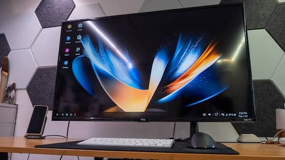
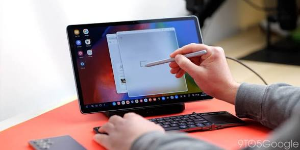
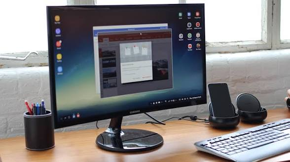
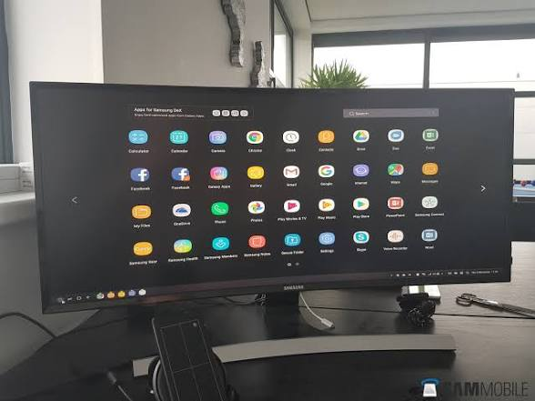

Unleashing Your Phone's Potential: A Deep Dive into Samsung DeX
For years, the tech industry has chased the dream of a single device that can do it all: a phone in your pocket that transforms into a full desktop workstation when you sit at your desk. While many have tried and abandoned this concept, Samsung has quietly refined it. Enter Samsung DeX (short for Desktop eXperience).
If you own a flagship Samsung Galaxy device, you are already carrying a surprisingly capable desktop computer. Here is everything you need to know about Samsung DeX, how it works, and why it might just change the way you interact with your mobile technology.
What is Samsung DeX?
At its core, Samsung DeX is a software platform built into premium Samsung Galaxy smartphones and tablets.
When connected to an external display—like a monitor or a smart TV—DeX bypasses the standard mobile interface and launches a full desktop environment.
You are greeted with a familiar layout: a desktop background, a taskbar at the bottom, a system tray for notifications, and the ability to open Android apps in resizable, overlapping windows. It allows you to use your phone precisely like a traditional PC, complete with keyboard and mouse support.

How to connect and use Samsung Dex.
Getting started with DeX is incredibly straightforward, and you have a few options depending on your setup and hardware.
- Wired Connection to a Monitor: The most robust and responsive way to use DeX is via a direct wired connection. You can use a simple USB-C to HDMI cable, or a dedicated USB-C hub. A hub is highly recommended, as it allows you to charge your phone and plug in standard USB accessories simultaneously.
- Wireless DeX: If you have a Miracast-compatible Smart TV or monitor, you can launch DeX completely wirelessly. Simply swipe down on your phone's quick settings panel, tap the DeX icon, and select your display.
- DeX on PC (Legacy): Historically, Samsung offered a "DeX for PC" app that allowed you to run the DeX environment in a window on your Windows or Mac machine via a USB cable. However, with recent One UI updates (One UI 7 and higher), Samsung has largely phased out support for this method, focusing entirely on direct-to-monitor and wireless connections.

Key features and productivity.
Dex is not just a screen mirroring tool; it fundamentally changes how you interact with your mobile apps.
- Multi-Window Multitasking: Unlike standard Android, DeX lets you open multiple apps simultaneously. You can have a YouTube video playing in one corner, a Word document open in the center, and your email client snapped to the side.
- Desktop-Class Browsing: When using web browsers like Samsung Internet or Google Chrome in DeX mode, websites automatically load their full desktop versions, eliminating the cramped mobile web experience.
- Peripheral Support: You can seamlessly pair Bluetooth keyboards and mice to your phone, or plug wired versions into a USB-C hub.
- Dual-Screen Functionality: While DeX is running on your external monitor, your phone screen remains fully functional. You can use it as a trackpad to control the desktop mouse, or continue using it as a standard phone to text or take calls without interrupting your workflow on the big screen.

Supported Devices
Samsung reserves DeX for its high-end Galaxy lineup. If you have a budget or mid-range device, you likely will not have access to this feature.
- Galaxy S Series: From the older Galaxy S9 all the way up to the modern S24 and S26 series.
- Galaxy Z Fold Series: All Z Fold models support DeX. (Note: The Z Flip series does not support DeX due to thermal and hardware constraints).
- Galaxy Note Series: Note 9, Note 10, and Note 20 series.
- Galaxy A series: Samsung hasn't forgotten there mid to high tier budget series, like the A56 5G, A36 5G, A55 5G, A05, A06, A07, A14 to A17 series.
- Galaxy Tab S Series: Premium tablets like the Tab S7, S8, S9, and newer models feature DeX. On these tablets, DeX can even run directly on the device's own screen without needing an external monitor.
- Galaxy Tab A Series: Budget tablets like the Tab A9+ and Tab A11+ coemes in with Samsung DeX and works right out of the box without even needing an external monitor due to its big enough screen size, pair that up with a keyboard cover you've got yourself a custom mini Macbook with you for far productive scenarios.

DeX Today:
More Than Just Office Work As mobile processors have grown exponentially more powerful—boasting RAM and CPU specs that rival many standard laptops—the use cases for DeX have expanded.
Today, DeX is a favorite not just for document editing and web browsing, but for more intensive tasks. With applications like Termux, developers can run full Linux environments directly on their Galaxy phones, using DeX as a legitimate, lightweight coding station. For frequent travelers, digital nomads, and students, a flagship phone paired with a portable monitor and a foldable keyboard completely eliminates the need to carry a heavy laptop.

The bottom line.
Samsung DeX remains one of the most underrated features in the mobile tech world. While it may not replace a high-end desktop for heavy video editing or PC gaming, it is more than capable of handling the vast majority of everyday computing tasks. If you have a compatible Galaxy device sitting in your pocket, you owe it to yourself to plug it in and see what it can do.